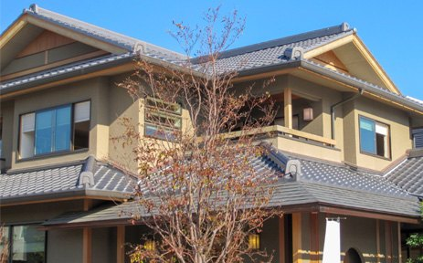
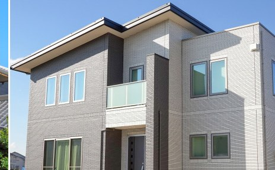
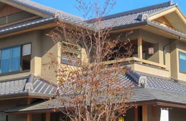

埼玉県桶川市・住宅から店舗・工場まで
住まいも、お店も、
住まいも、お店も、
建てて・直しておまかせ。
マルタカ工務店株式会社は、埼玉県桶川市を拠点に、新築・リフォーム・改築から修理まで手がける工務店です。住宅はもちろん、アパート・店舗・事務所・工場・倉庫まで幅広く対応します。建物のことなら、まずはお気軽にご相談ください。

※ 写真はマルタカ工務店様の現在のサイトより引用しています
住宅〜工場
幅広い建物に対応
新築〜修理
建物まわりをワンストップ
桶川・さいたま
を中心に埼玉県内対応
Services
事業内容
新築から小さな修理まで、建物のことをまとめてお任せいただけます。
New Build
新築（住宅）
- ご要望に合わせた住宅の新築
- 土地やご予算に合わせた住まいのご提案
- 地元工務店ならではの、こまやかな対応
Reform
リフォーム・改築・改装
- 間取り変更・増改築などの改築工事
- 内装・外装のリフォーム・改装
- 暮らしや使い方の変化に合わせた更新
Business
店舗・事務所・工場
- 店舗・事務所の新装・改装
- 工場・倉庫の建築・改修
- 事業用の建物も幅広く対応
Repair
修理・メンテナンス
- 建物の傷んだ箇所の修理
- 設備・内外装のメンテナンス
- 「どこに頼めば」の小さな困りごともご相談を
Reasons
マルタカ工務店が選ばれる理由
1
住宅から事業用物件まで幅広く
住宅・アパートはもちろん、店舗・事務所・工場・倉庫まで。建物のことをまとめてお任せいただけます。
2
新築から修理まで一貫して
新築・リフォーム・改築・改装から、日々の修理・メンテナンスまで。建物まわりをワンストップで対応します。
3
地域密着の対応
桶川市を拠点に、さいたま市など埼玉県内に対応。近くにいて、すぐ動ける工務店です。
4
大きな工事も小さな工事も
建物の新築や大きな改修から、ちょっとした修理まで。まずはご相談ください。
Works
施工事例


※ 掲載写真はマルタカ工務店様の現在のホームページから、ご提案のために引用したものです（掲載の可否はお申し付けください）。本番制作時には、高解像度の原本や新しく撮影したお写真に差し替えできます。
Company
会社概要・アクセス
| 社名 | マルタカ工務店株式会社 |
|---|---|
| 所在地 | 〒363-0020 埼玉県桶川市上日出谷 |
| 電話 | 048-657-8943 受付時間は本番制作時にご案内します |
| 代表 | 髙橋 武士 |
| 事業内容 | 新築（住宅）／リフォーム・改築・改装／店舗・事務所・工場など事業用物件／修理・メンテナンス |
| 対応エリア | さいたま市・桶川市など埼玉県内 |
| 建設業許可 | 建築工事業 埼玉県知事許可（般-5）第76852号 |
FAQ
よくある質問
相談や見積りは無料ですか？
ご相談・お見積りは無料でお受けします。「まだ具体的に決まっていない」という段階でも大丈夫です。ご希望やお困りごとをお聞かせください。
小さな修理だけでもお願いできますか？
もちろん対応いたします。建物の小さな修理・メンテナンスから承ります。「どこに頼めばいいか分からない」という内容もお気軽にご相談ください。
対応エリアはどこまでですか？
桶川市を拠点に、さいたま市など埼玉県内で対応しています。エリアのご確認もお電話・フォームで承ります。
店舗や工場の工事もお願いできますか？
対応しています。住宅だけでなく、店舗・事務所・工場・倉庫など事業用の建物も、新築・改装・改修まで幅広くお任せいただけます。
Contact
お問い合わせ・無料相談
お電話、または下記フォームからお気軽にどうぞ。
お電話でのご相談は 048-657-8943
ありがとうございます。これは提案サンプルのため送信は行われません（本番では入力内容がお店に届くよう実装します）。
このサンプルについて
本ページは、マルタカ工務店 様の現在のホームページを、スマホ対応・今の見やすさで作り直すことを想定したリニューアル提案サンプルです。デザイン・作りの品質は本番と同等ですが、下記はサンプルでは省略しており、本番制作でご用意します。
- お問い合わせフォームの送信機能（お店のメールへ連携）
- 実際の施工写真（施工前後・お客様の建物など）への差し替え
- 保証やアフターサービス・お客様の声など、信頼につながる情報の掲載
- 独自ドメイン・SSL・検索/SNS向け設定（SEO・OGP）の本設定